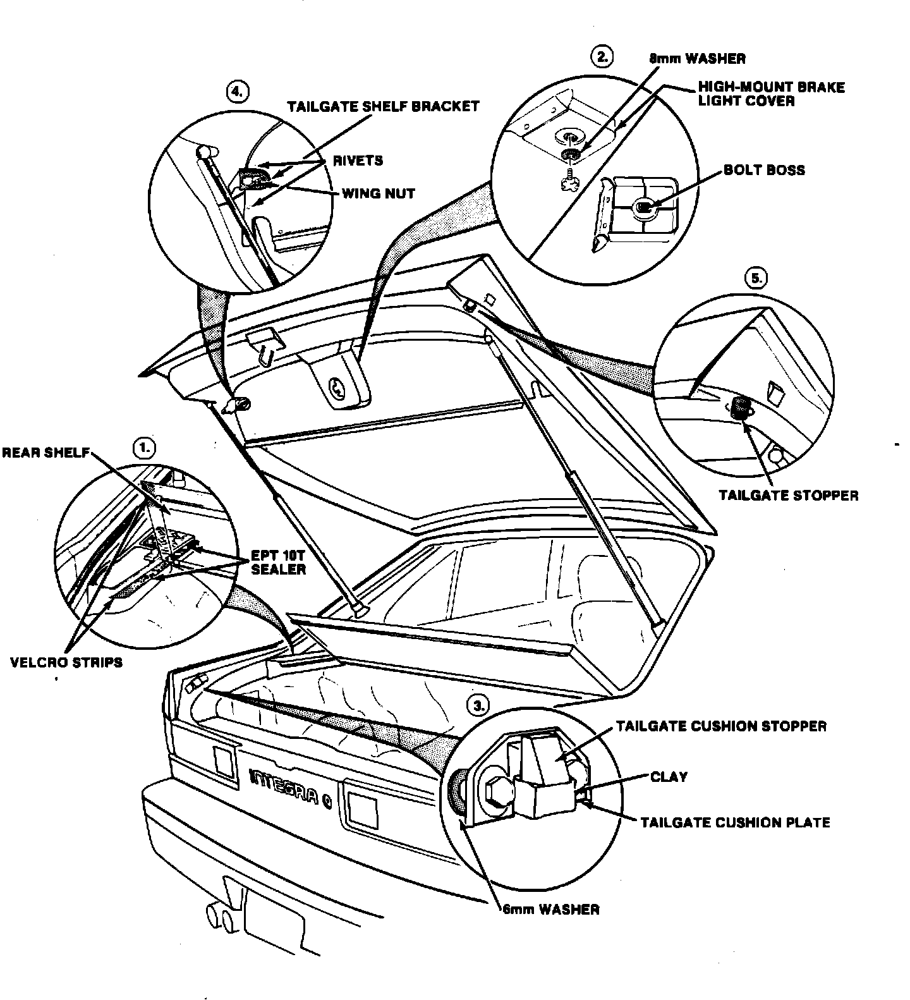

Rear Shelf - Rattling Noise
88acura04YEAR MODEL VIN APPLICATION
'86-87 INTEGRA ALL
December 9, 1988
BULLETIN NO.
87-012
N&V
Rattles From Rear Shelf Area (Supersedes 87-012 dated July 20, 1987)
PROBLEM Rattling noises from the rear shelf area
PROBABLE CAUSE
The problem may result from any one of the following causes:
^ The high-mount brake light cover is rattling against the bottom of the tailgate shelf.
^ The rear shelf is rattling against the plastic lip of the side shelf.
^ The tailgate shelf is rattling against the rear shelf
^ The hatch is not sealed properly when closed.
CORRECTIVE ACTION
See pages 2 and 3 for the repair procedures
WARRANTY CLAIM INFORMATION
Operation number: 823002
Flat rate time: 0.6 hour
Failed part number: 83880-SD2-920ZB
Defect code: 042 Contention code B07
NOTE: This repair will only require a portion of velcro (can be obtained at upholstery or fabric shop) and EPT10T sealer. Submit the proposed dollar amount under the materials section of the warranty claim.
Material Cost: Velcro $1.50 EPT 10 Sealer $1.00

1. Side Shelf
NOTE: If the shelf has already been repaired with EPT 10T sealer according to Service Bulletin 86-015, remove a length of about 1-1/2 inches of the sealer to accommodate the velcro strips.
^ Cut four, 1-1/2 strips of velcro.
^ Apply one velcro strip to the side shelf lip, and then trim the excess velcro so it conforms with the shelf contour.
^ Apply another velcro strip to the underside of the rear shelf.
^ Repeat procedures 2 and 3 on the other side shelf lip.
^ Apply EPT 10T sealer (P/N 06992-SA5-000) to the remainder of the entire side shelf lip.
2. High Mount Brake Light Cover (up to: VIN JH4DA10HS003009 - 5 dr., VIN JH4DA3-HS003761 - 3 dr.).
^ Remove the high-mount brake light cover.
^ Cut or file 2 mm off of the center bolt boss.
^ Install an 8 mm washer on the cover bolt.
^ Reinstall cover.
3. Tailgate Cushion
Perform the deflection test first. If deflection is OK, go to repair procedure 4.
^ Remove the tailgate cushion.
^ Install two, 6 mm washers - one for each bolt - between the cushion plate and the quarter panel.
^ Reinstall the tailgate cushion plate.
Deflection Test:
^ Make sure the tailgate cushion stopper is being deflected 1 to 4 mm:
- Put a piece of clay under the stopper, and make sure it touches the bottom of the stopper.
- Close the hatch and then open it.
- There should be a 1 to 4 mm indentation in the clay where the stopper was forced down into it.
- If there isn't an adequate indentation, install additional 6 mm washers (steps 1 thru 3), and recheck for proper stopper deflection (step 4).
4. Tailgate Shelf Bracket
^ Remove bracket wing nut and then the tailgate shelf.
^ Bend the brackets away from the tailgate shelf enough so when the hatch is closed, the tailgate shelf applies additional pressure to the rear shelf.
^ Reinstall the tailgate shelf. Make sure the shelf is seated all the way toward the rear window, so the bracket isn't in contact with any rivets
^ Reinstall the bracket wing nuts.
5. Tailgate Stopper
^ Unscrew the stopper two complete turns.
^ Close the hatch and make sure the hatch doesn't have any vertical free-play, ^ If there is any free-play, continue to adjust the stopper 1/2 turn at a time until the free-play is eliminated.